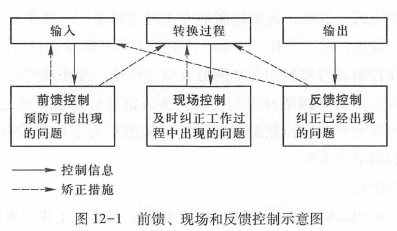

管理学重点（2025.1.3）
A卷（80%概率）
B卷
单选
- 管理的五大职能：
决策、组织、领导、控制和创新
- 环境分析：P87
PEST（一般环境分析方法）
波特五力模型（具体环境分析方法）
SWOT分析（内外部环境综合分析方法）
- 组织中的职能设计内容P127
职能设计是对组织完成目标所需要的职能、职务的整体安排。
- 常见的组织结构的几种模式P139优缺点
- 直线制组织
- 职能制组织
- 直线职能制组织
- 事业部制组织
- 矩阵制组织结构
- 职权集中
集权是指决策权集中在组织高层的一种权力系统。
- 具有容易协调的优势。
- 决策所需时间增加，影响决策的效率和质量。
- 影响下属归属感和认同感。
- 扁平化组织结构的优点P145
- 减少组织层级，便于高层管理者了解各科层组织的运行情况；
- 大幅削减管理入员，节省管理成本，有效降低协调的难度；
- 信息传递速度加快，减少信息的过滤和失真；
- 管理幅度加大，强调员工的自我管理，有利于调动成员的积极性，提高决策的民主化程度。
- 直线职权和参谋职权P155
- 组织结构发展演进的趋势P145
- 扁平化
- 柔性化
- 无边界化
- 虚拟化
- 管理幅度和管理层次
- 领导理论-领导方式，各自的优缺点
- 独裁型
- 民主型
- 放任型
- 领导类型的划分两个维度P202
- 定维维度
- 关怀维度
- 领导——成员交换理论P208
- 激励理论P225
- 如何做到有效的信息沟通P245
- 学会倾听
- 重视反馈
- 克服认知障碍
- 抑制情绪化反应
- 控制过程设计哪几个基本环节
- 前馈控制
- 现场控制
- 反馈控制

{kind=link}
- 组织变革的三个阶段
- 解冻
- 转变（变革）
- 冻结
- 组织结构内容P136
- 工作任务的分解
- 任务组合
- 组织协调
- 大中型企业组织基本控制方式：层级控制
- 预算控制
- 审计控制
- 财务控制
- 管理层次过多会出现什么问题P145
- 不便于高层管理者了解各科层组织的运行情况
- 管理人员数量增加，管理成本伤升，提高协调难度
- 减缓信息传递速度，增加信息的鼓励和失真
- 不利于调动成员积极性，降低决策民主化程度
- 集权分权P153
- 组织规模
- 政策统一性
- 成员的自我管理能力
- 组织的可靠性
- 组织的发展阶段
- 领导者职位职权（法定权利）和个人权利的含义与关系
- 领导行为理论的内容P201
- 如何提高领导的有效性
- 领导者：
- 个人特质：精力充沛、随和、责任感、情绪稳定、外向、经验开放
- 行为特征：民主、高定规-高关怀、以员工为中心、团队管理型
- 被领导者：接受程度高
- 情境：
- 组织内部环境：任务结构、职位权力、工作特征
- 组织外部环境：社会文化
- 领导者：
- 管理者或领导者的角色理论（三大）和十大具体角色P210
- 人际关系
- 挂名首脑
- 领导者
- 联络者
- 信息传递
- 监听者
- 传播者
- 发言人
- 决策制定
- 企业家
- 故障排除者
- 资源分配者
- 谈判者
- 人际关系
- 强化理论P233

- 组织变革的障碍P346
- 认知与心理因素
- 缺乏了解
- 评价差异
- 认知惰性
- 资源路径依赖因素
- 核心能力刚性
- 企业家行为选择的路径依赖性
- 企业文化的组织记忆特征
- 社会与政治影响因素
- 个人利益
- 道德的困境
- 团队心理压力
- 认知与心理因素
- 应对市场的不确定性，企业应该怎么做
判断
- 学习和研究管理学需要具备哪几个思维：战略、历史、辩证、创新及底线思维
- 泰勒管理理论
- 主要内容
- 核心
- 效果
- 赫伯特西蒙现代决策理论
- 管理就是决策，决策贯穿于整个管理过程
- 决策（管理的实质）过程（四个阶段）
- 情报活动
- 设计活动
- 抉择活动
- 审查活动
- 决策的准则（追求“最优”或“绝对的理性”，实际上只能满足于“足够好的”或“令人满意的＂决策）
三个前提：
- 决策者对所有可供选择的方案及其执行结果无所不知
- 决策者具有无限的估算能力
- 决策者的脑中对各种可能的结果有一个“完全而一贯的优先顺序”
- 程序化决策和非程序化决策
- 程序化决策：利用既定的程序来解决例行活动
- 非程序化决策：用个别方式加以处理非例行活动
- 决策分类类型P74
- 根据环境可控程度的分类
- 确定型决策（结果唯一）
- 风险型决策（有概率（介于0~1之间）
- 不确定型决策（没有概率）
- 根据决策问题的分类
- 程序化决策-例行问题
- 非程序化决策-例外问题
- 根据决策主体的分类
- 个体决策
群体决策
优点：
- 有利于集中不同领域专家的智慧，应付日益复杂的决策问题。
- 能够利用更多的知识优势，借助更多的信息，形成更多的可行性方案。
- 具有不同背景、经验的不同成员在选择收集的信息、要解决问题的类型和解决问题的思路上往往都有很大差异，他们的广泛参与有利于提高决策时
考虑问题的全面性。
- 容易得到普遍的认同，有助于决策的顺利实施。
- 有利于使人们勇于承担风险。
缺点：
- 是速度、效率可能低下。
- 有可能为个人或子群体所左右。
- 根据环境可控程度的分类
- 综合计划和专项计划P105
- 综合计划一般会涉及组织内部的许多部门和许多方面的活动，是一种总体性的计划。
- 专业计划则是涉及组织内部某个方面或某些方面的活动计划。
- 项目计划通常是组织针对某个特定课题所制定的计划。
- 目标管理P110
- 组织机构的扁平化P145
- 分权式的组织形式，适合怎样的情形P153
- 组织规模较大（管理层级、部门数量、管理人员较多，沟通路径较多且复杂时）
- 组织各部门之间差异较大， 需要采取不同的政策以保证其发展
- 各级管理者、组织成员的自我管理能力强，组织成员需要独立开展工作
- 决策速度较慢，成员积极性较低时
- 组织在成熟阶段、衰退阶段时
- 当企业规模比较大或者实行多品种生产的时候，适合什么样的组织结构：事业部制组织、矩阵制组织结构
- 组织文化对组织的影响P186
- 导向功能（直接或通过整体价值认同引导组织成员心理和行为）
- 凝聚功能（沟通成员思想感情、融合理想信念情操、培养激发群体意识）
- 激励和约束功能（激发积极主动创造性、指导言行）
- 辐射功能（向社会）
- 调适功能（使个人价值观与组织需要想匹配）
- 目标设置理论P232

- 控制的三种类型P265——前馈，及时，反馈
- 不确定性情境下决策方案选择准则P81
- 乐观准则
- 悲观准则
- 等概率准则
- 最小后悔原则
- 头脑风暴法P98
- 组织结构的柔性化P145
- 管理幅度和管理层次的关系P151：当组织规模一定时，管理幅度与组织层级呈现出反比例关系。
- 权变理论P212
组织的效率取决于领导者的风格和情境的有利性的相互作用。
- 领导者的风格分为两类： 任务取向型和关系取向型。关系取向型得分较高
- 情境的有利性指的是某一种情境能赋予领导者多大的权力和影响力。从三个维度进行分析：
- 领导者—成员关系（最重要）：两者之间的关系好，则他们拥有更多的权力和影响力。
- 任务结构（第二重要）：任务的结构性强，工作情境对领导有利，反之则不利。
- 职位权力：如果领导者所处职位允许他们奖励和惩罚，雇用和解雇下属，则他们就拥有更多的权力和影响力。

- 内部选聘提拔和外部选聘的优缺点P163
优点 缺点 内部选聘 1. 可以提供激励因素和培
养组织成员的忠诚度。
2. 组织比较容易对其进行全面了解，所需要的培训较之外部人员少，能节约部分培训费用，省时、省力、省资金。
3.被提升的组织成员熟悉工作环境，可以迅速适应新的工作岗位，实现人
与事的更好结合，有利于组织和成员自身的发展。1. 不利于引入
新思想。
2. 导致人际关系复杂，人际矛盾
加剧，经营思想保守、墨守成规等不利后果，并由此产生不公正现象和庇护关系。外部选聘 应聘者面广，中间环节少，人员选用耗时较短，并且可
以避免裙带关系的形成。1. 在选聘过程中，应聘人员的素质高低不齐；2. 选聘时间短，对他们的情况了解不够全面；有些职介机构鱼龙混杂。
论述
- 管理的职能：决策、组织、领导、控制和创新
- 如何正确决策P80
- 分清重点，对解决问题的优先次序和应当投入的时间、精力、资金等资源的数量做出判断。尽可能地靠近问题产生或机会出现的地方进行决策，获取真实信息，快速地做出并实施决策。
- 在信息准确的基础上，决策者
必须建立起明确的决策目标。运用精确的工具和方法去衡量决策的实施结果。
- 对变化作出准确的预测或反应。即时获取所需信息，及时采取行动。
- 在不确定性情境下，运用乐观准则、悲观准则、等概率准则和最小后悔准则来决策。
- 管理思维的权变观P56（莫尔斯和洛什的“超Y 理论”，费德勒的权变领导模型等）
管理技术与方法同环境因素之间存在一种函数关系，企业管理要随环境的变化而变化。

- SWOT分析P90：最常用的内外部环境综合分析技术
优势(strengths) 、劣势(weaknesses) 、机会(opportun iti es) 、威胁(threats)，形成环境分析矩阵。
优点：
- 它把内外部环境有机地结合起来，进而帮助人们认识和把握内外部环境之间的动态关系
- 它把错综复杂的内外部环境关系用一个二维平面矩阵反映出来
- 它促使人们辩证地思考问题
- 可以形成多种行动方案，且可以提高决策的质量
- 如何进行有效激励P234（理解，结合题目）
- 工作激励
- 工作扩大：通过扩大岗位工作的范围、增加工作岗位的职责，消除员工因从事单调乏味工作而产生的枯燥厌倦情绪，从而提高员工的劳动效率。
- 工作丰富：通过增加岗位的技术和技能的含量，使工作内容更具挑战性和自主性，以满足员工更高层次的心理需求。
- 岗位轮换：丰富员工的工作经验，使员工明确自己的长处和弱点，找到适合自己的位置，而且可以增加员工对组织整体工作的了解，改善日后部门间的合作关系。
- 成果激励
- 物质激励：工资、福利、员工持股计划
- 精神激励：情感、荣誉、信任（授予实权、委以重任、允许犯错等）
- 综合激励：榜样、危机、培训、环境（改善政治环境、工作环境、生活环境和人际环境，从而使员工在工作过程中心情舒畅、精神饱满）
- 工作激励
案例分析
- 激励理论P225
- 领导方式、类型理论P206
情境领导理论
激励理论P225